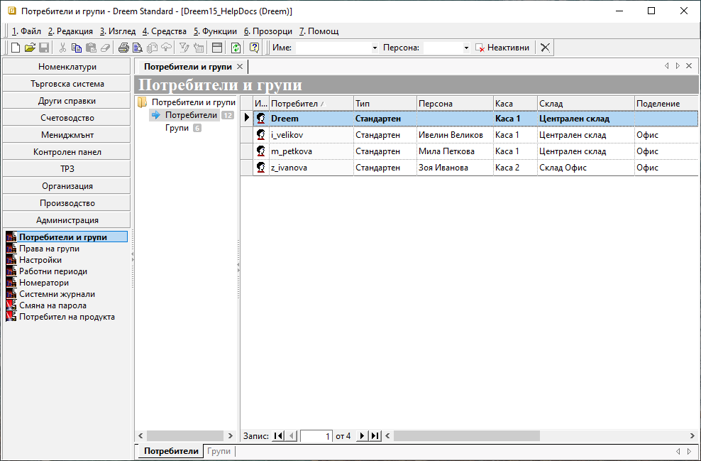
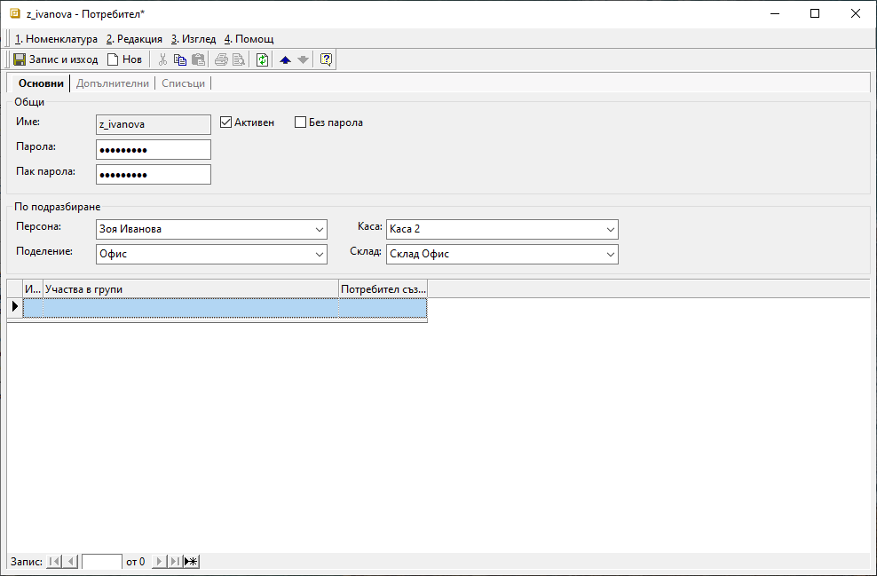
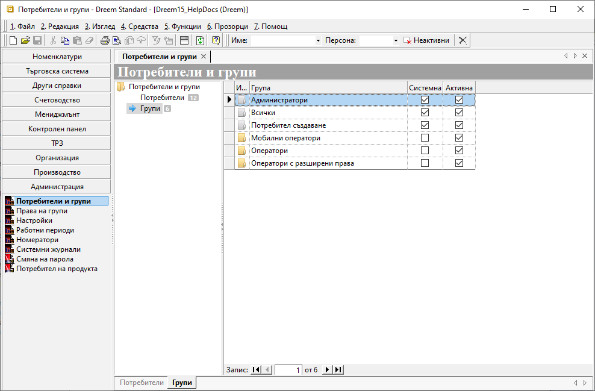
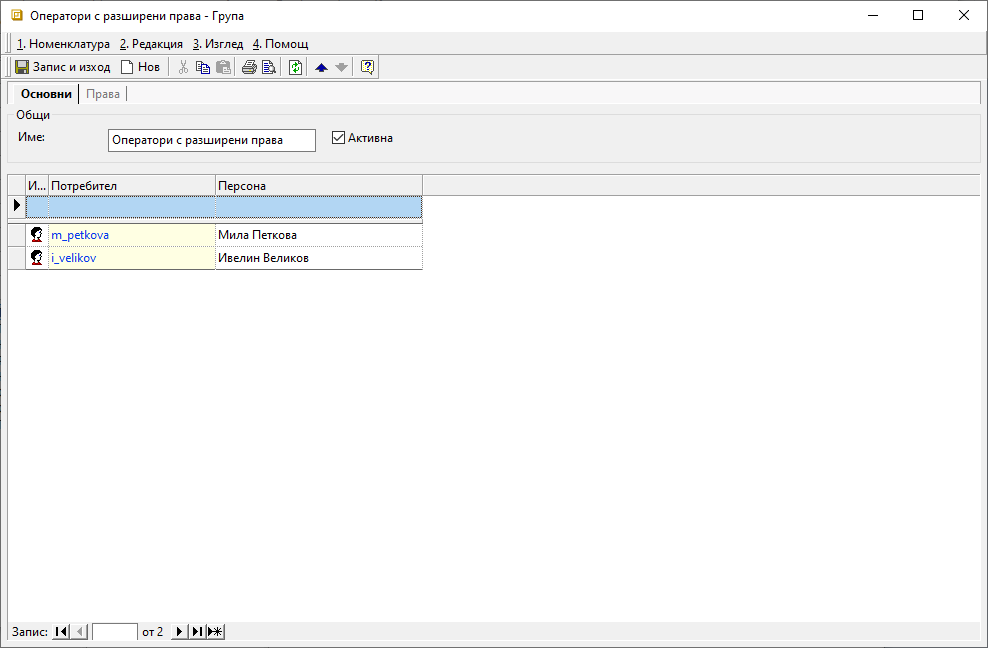
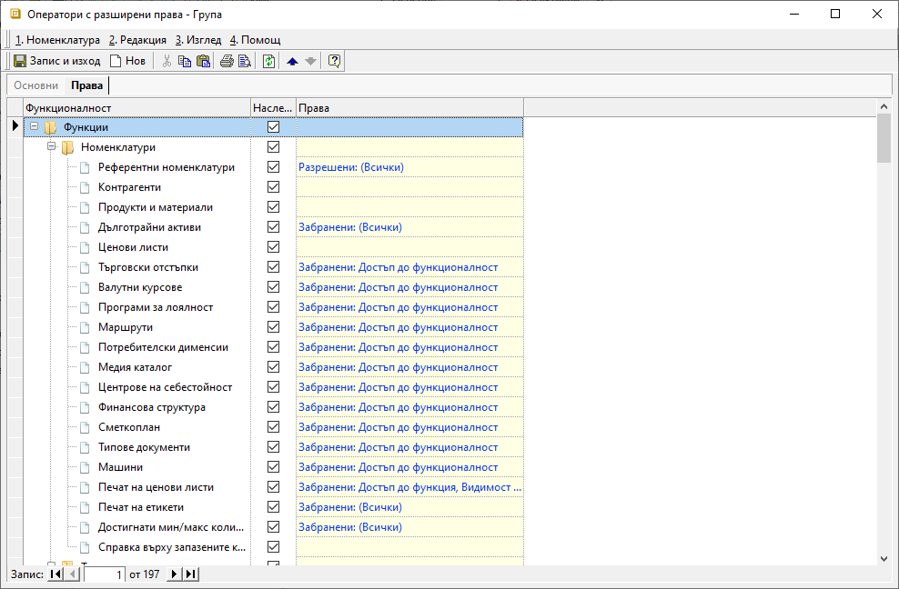

1.4.1. Потребители и групи#
Достъпът до Dreem ERP се осъществява чрез потребители, които трябва да бъдат въведени предварително от меню Администрация.
Според нуждите на дейността в организацията, могат да бъдат настроени права за достъп и работа с функционалности и данни. Правата се дефинират по групи, в които участват избрани потребители.
Нови потребители се създават от Администрация || Потребители и групи. След маркиране на раздел Потребители, вдясно се отваря списък с въведени до момента потребители, който включва и системния потребител Dreem.

С десен бутон върху списъка се избира Нов потребител, което отваря празна форма за въвеждане на данни.
В секция Основни се попълват:
Име - в полето се изписва на латиница потребителско име;
Активен - чрез поставяне на отметка потребителят се маркира като действащ, което му дава достъп до системата;
Без парола - чрез поставяне на отметка, потребителят ще има достъп до системата без парола;
Парола / Пак парола - попълвате паролата на потребителя. При първото му влизане системата ще има възможност да я смени. Тези полета са активни, когато поле Без парола не е маркирано.

Данните, въведени в секция По подразбиране, ще бъдат прилагани автоматично от системата за документите, които генерира съответният потребител.
Персона - поле за избор на персона от предварително настроен списък със служители за контрагент Потребител на продукта;
Данните се използват при генерация на нов документ за автоматично обзавеждане на поле Съставил.Каса - поле за избор на каса по подразбиране, която системата ще предлага при генерация на касови документи;
Поделение - поле за избор на поделение по подразбиране, за което избраният потребител работи;
Системата ще предлага данните при генерация на документи, като прилага настроения за поделението номератор.Склад - поле за избор на склад по подразбиране, който системата ще предлага при генерация на свързани със склад документи;
Участва в рупи - списък с групи, към които е присъединен потребителят;
Участие в нова група се настройва от реда за добавяне на нов запис.
В секция Допълнителни се настройват задължителните реквизити:
Достъп само за четене - поле с настройка за вид на достъпа - само за четене или за въвеждане на данни;
Настройката Достъп само за четене: Да може да се използва за одиторски профили.Търговски обект - поле за избор на търговски обект по подразбиране;
Системата прилага настройката за автоматично попълване на търговския обект при продажба.Тип - поле за избор на режим на достъп до мобилната платформа на системата;
При избран тип 0 - Стандартен системата позволява пълен достъп. За потребители от тип 1 - Интернет е позволен достъп единствено до мобилната платформа.
Нови групи с потребители се създават от Администрация || Потребители и групи.
След маркиране на раздел Групи, вдясно се отваря списък с въведени до момента групи потребители. В него са включени и системните настройки Администратори, Всички и Потребител създаване.

С десен бутон върху списъка се избира Нова група, което отваря празна форма за въвеждане на данни.
В секция Основни се попълват:
Име - в полето се попълва наименование на групата;
Активна - чрез поставяне на отметка системата отчита настройките за групата и ги прилага за участниците в нея;
Потребител - поле за избор на участници в текущата група;
Потребителите трябва да са предварително настроени. Може да се добавят от списък чрез бутона с трите точки или директно изписване на името в полето.

Секция Права осигурява бърз достъп до настроените права за текущата група и тяхното управление.

Запис и изход - бутон, който запазва модификациите и излиза от формата.